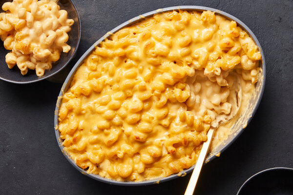

Lasagna

Delicious lasagna. A family favorite!
- noodles
- margarine
- flour
- salt
- pepper
- milk
- parmesan cheese
- Bring a large pot of lightly salted water to a boil. Cook lasagna in the boiling water, stirring occasionally until cooked through but firm to the bite, about 8 minutes. Drain.
- Preheat oven to 375 degrees F (190 degrees C).
- Melt margarine in a skillet over low heat; cook and stir flour, salt, and pepper into the melted margarine until smooth and bubbling, 2 to 3 minutes.
Macaroni and cheese

A very quick and easy fix to a tasty side-dish.
- macaroni
- butter
- flour
- salt
- Cook elbow macaroni in the boiling water, stirring occasionally until cooked through but firm to the bite, 8 minutes. Drain.
- Melt butter in a saucepan over medium heat; stir in flour, salt, and pepper until smooth, about 5 minutes.
- Fold macaroni into cheese sauce until coated.